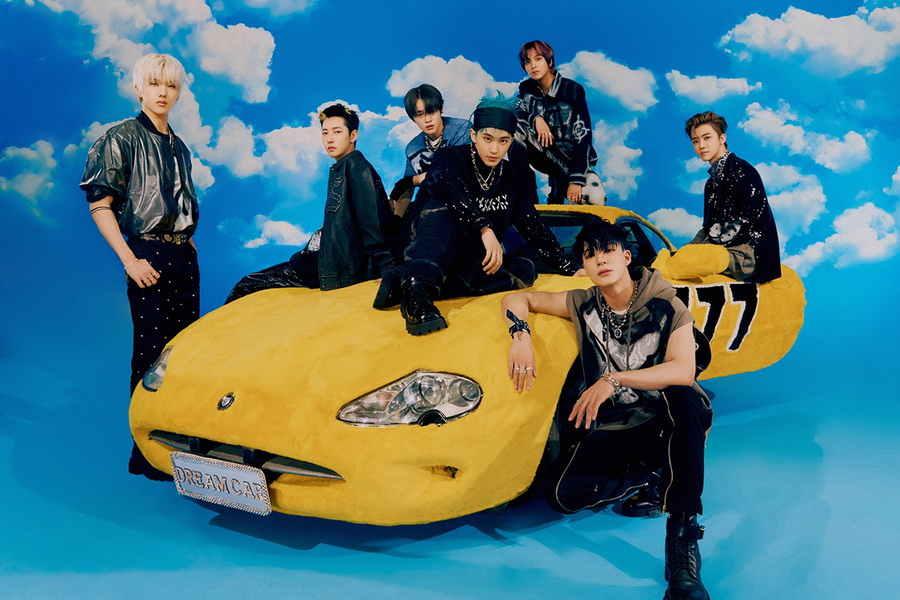

เนื้อเพลง Beatboox - NCTDREAM
SMTOWN

yeah 뱉는 순간 Heartbeat
yeah แพทนึน ซุนกัน Heartbeat
จังหวะหัวใจที่เต้นรัว
bum bum bum
ตึกตักตึกตัก
Cool kid 다운 Kick
Cool kid ดาอุน Kick
เด็กเท่จังหวะเตะคูล
on the drum drum drum
พร้อมเสียงกลองดังสนั่น
Sugar pop!
I got some some some
ผมว่าผมสัมผัสได้
몸이 반응해
โมมี พันอึงแฮ
ร่างกายเริ่มตอบสนอง
Like a morning call
เหมือนเสียงนาฬิกาปลุกยามเช้า
uh 뭘 하든 달라지길 원하면
uh มวอล ฮาดึน ทัลลาจีกิล วอนฮามยอน
ถ้าอยากจะเห็นการเปลี่ยนแปลง
가만 기다리지 말고
คามัน คีดารีจี มัลโก
อย่าเอาแต่รีรออยู่เฉย ๆ
힘껏 소리 내질러
ฮิมกอด โซรี แนจิลลอ
ส่งพลังเสียงตะโกนออกมาให้สุด
Dance the dance the dance dance
แล้วเริ่มเต้นตามจังหวะ
또 한 번 세상을 흔들어 볼게
โต ฮัน บอน เซซังงึล ฮึนดือรอ บลเก
แล้วลองเขย่าโลกตามท่วงทำนอง
Watch me
ดูผมนะ
ooh 24/7 아직 부족해
ooh 24/7 อาจิก พูจกแค
เวลา 7 วัน 24 ชั่วโมงยังคงไม่พอ
들리니
ทึลรีนี
ได้ยินไหม
함께 있는 매일 Put it on replay
ฮัมเก อิดนึน แมอิล Put it on replay
กรอเพลงวนซ้ำทุกวันที่เราอยู่ด้วยกัน
yeah 미쳐버릴 합 만들어
yeah มิดชอบอริล ฮับ มันดือรอ
มาสร้างจังหวะบ้าระห่ำ
(yeah yeah)
Make a Beatbox box 터트려
Make a Beatbox box ทอทือรยอ
แกะกล่องลองสร้างเสียงบีทบอกซ์
(yeah yeah)
모일수록 완벽한 궁합
โมอิลซูรก วันบยอกคัน คุงฮับ
คู่ขาที่แสนเพอร์เฟคมารวมตัวกัน
Everywhere I go bring the Beatbox
จะมีเสียงแห่งบีทบอกซ์ในทุกที่ที่ผมไป
yeah 지금 올라타 우리 Flow
yeah ชีกึม โอลราทา อูรี Flow
ความโฟลว์ของบทเพลงเราได้เริ่มขึ้นแล้ว
(yeah yeah)
Make a Beatbox box 터트려
Make a Beatbox box ทอทือรยอ
แกะกล่องลองสร้างเสียงบีทบอกซ์
(yeah yeah)
내 목소리 자체가 음악
แน มกโซรี ชาเชกา อือมัก
เสียงของผมที่ราวกับมีดนตรีคลอ
Everywhere I go bring the Beatbox
จะมีเสียงแห่งบีทบอกซ์ในทุกที่ที่ผมไป
Everywhere I go bring the Beatbox
จะมีเสียงแห่งบีทบอกซ์ในทุกที่ที่ผมไป
Everywhere I go bring the Beatbox
จะมีเสียงแห่งบีทบอกซ์ในทุกที่ที่ผมไป
장난 없는 장단 Boom boom boom
ชังนัน ออบนึน ชังดัน Boom boom boom
จังหวะเสียงกลองหนักแน่นที่ไม่ได้มาเล่น ๆ
맛보면 중독될 걸 Yum yum yum
มัดโปมยอน ชุงดกตเว็ล กอล Yum yum yum
แค่ได้ลองฟังสักครั้งจะติดใจ
너의 머릿속에 Ring ring ring 울려
นอเอ มอริดโซเก Ring ring ring อุลรยอ
เหมือนเสียงระฆังดังวนซ้ำ ๆ ในหัวเธอ
따라 하고 싶게 돼 그냥 Listen up
ตารา ฮาโก ชิบเก ดเว คือนยัง Listen up
เพียงแค่ฟังก็อยากจะโยกตัวตาม
입에 붙어 Like a snack
อีเบ พุดทอ Like a snack
ท่อนฮุคติดปากราวกับขนมขบเคี้ยว
다시 Repeat 되는 Trap
ทาชี Repeat ทเวนึน Trap
เสียงจังหวะที่วนเล่นซ้ำไปมา
이 리듬 Make it pop like soda
อี รีดึม Make it pop like soda
ท่วงทำนองสดใสราวกับโซดา
yeah 귀에 Pop like soda
yeah ควีเอ Pop like soda
ซาบซ่าเหมือนฟองฟู่โซดา
yeah 처음 느끼는 New flavor
yeah ชออึม นึกกีนึน New flavor
รสชาติใหม่ที่เพิ่งเคยได้สัมผัส
Watch me
ดูผมนะ
(ooh Just watch me)
(แค่ดูผมไว้)
날 따라오면 돼
นัล ตาราโอมยอน ดเว
แค่ทำตามผมก็พอ
(후회 않게)
(ฮูฮเว อันเค)
(แล้วคุณจะไม่เสียดาย)
어딜 가도 이 리듬은 계속 Replay
ออดิล คาโด อี รีดือมึน เคซก Replay
ไม่ว่าจะไปไหนเพลงนี้จะดังทั่วทุกที่
yeah 미쳐버릴 합 만들어
yeah มิดชอบอริล ฮับ มันดือรอ
มาสร้างจังหวะบ้าระห่ำ
(yeah yeah)
Make a Beatbox box 터트려
Make a Beatbox box ทอทือรยอ
แกะกล่องลองสร้างเสียงบีทบอกซ์
(yeah yeah)
모일수록 완벽한 궁합
โมอิลซูรก วันบยอกคัน คุงฮับ
คู่ขาที่แสนเพอร์เฟคมารวมตัวกัน
Everywhere I go bring the Beatbox
จะมีเสียงแห่งบีทบอกซ์ในทุกที่ที่ผมไป
Everywhere I go bring the Beatbox
จะมีเสียงแห่งบีทบอกซ์ในทุกที่ที่ผมไป
Everywhere I go bring the Beatbox
จะมีเสียงแห่งบีทบอกซ์ในทุกที่ที่ผมไป
다 미루고 하루쯤은 Crazy
ทา มีรูโก ฮารูจือมึน Crazy
ทิ้งทุกอย่างแล้วมาสุดเหวี่ยงกันสักวัน
We know there’s no stopping
เราก็รู้ดีว่าไม่มีใครจะหยุดยั้ง
느껴진다면 Time to start
นึกกยอจินตามยอน Time to start
ถึงเวลาเริ่มแล้ว
내 목소리로 새로운 이야기를 써
แน มกโซรีโร แซโรอุน อียากีรึล ซอ
เขียนเรื่องราวใหม่ด้วยเสียงของผม
이 울림이 번져갈 World
อี อุลรีมี พอนจอกัล World
โลกที่เต็มไปด้วยเสียงเพลง
다 뛰어들어 baby right now
ทา ตวีออดือรอ baby right now
ทุกคนมากระโดดโลดเต้นกันเลย
Dance the dance the dance dance
ออกสเต็ปเต้นกันให้เต็มที่
우리만이 가능한 음악
อูรีมาเน คานึงฮัน อือมัก
เพลงที่มีไว้สำหรับพวกเรา
Everywhere I (go) bring the Beatbox
จะมีเสียงแห่งบีทบอกซ์ในทุกที่ที่ผมไป
Everywhere I go bring the Beatbox
จะมีเสียงแห่งบีทบอกซ์ในทุกที่ที่ผมไป
yeah 미쳐버릴 합 만들어
yeah มิดชอบอริล ฮับ มันดือรอ
มาสร้างจังหวะบ้าระห่ำ
(yeah yeah)
Make a Beatbox box 터트려
Make a Beatbox box ทอทือรยอ
แกะกล่องลองสร้างเสียงบีทบอกซ์
(yeah yeah)
모일수록 완벽한 궁합
โมอิลซูรก วันบยอกคัน คุงฮับ
คู่ขาที่แสนเพอร์เฟคมารวมตัวกัน
(이대로 완벽해)
(อีแดโร วันบยอกแค)
(นี่แหละเพอร์เฟคแล้ว)
Everywhere I go bring the Beatbox
จะมีเสียงแห่งบีทบอกซ์ในทุกที่ที่ผมไป
(우리만의 노래)
(อูรีมาเน โนแร)
(บทเพลงแห่งเรา)
지금처럼 서로의 음을 맞춰
ชีกึมชอรอม ซอโรเอ อือมึล มัดชวอ
จับจังหวะตามเพลงในตอนนี้
우리가 함께 만들 음악
อูรีกา ฮัมเก มันดึล อือมัก
เพลงที่เราสร้างขึ้นมาด้วยกัน
(Everywhere I go bring the Beatbox)
(จะมีเสียงแห่งบีทบอกซ์ในทุกที่ที่ผมไป)
꿈꿔왔던 순간이 여기 있어
กุมกวอดตอน ซุนกานี ยอกี อิดซอ
ช่วงเวลาแห่งความฝันเกิดแล้ว ณ ที่นี้
We won’t stop for a moment uh
เราจะไม่หยุดยั้ง
(Everywhere I go bring the Beatbox)
(จะมีเสียงแห่งบีทบอกซ์ในทุกที่ที่ผมไป)
Everywhere I go bring the Beatbox
จะมีเสียงแห่งบีทบอกซ์ในทุกที่ที่ผมไป
Everywhere I go bring the Beatbox
ทุกพื้นที่ที่ย่างกรายจะมีเสียงแห่งบีทบอกซ์